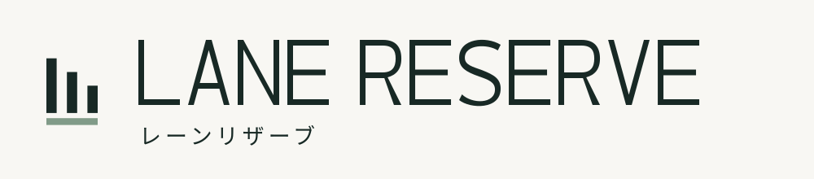
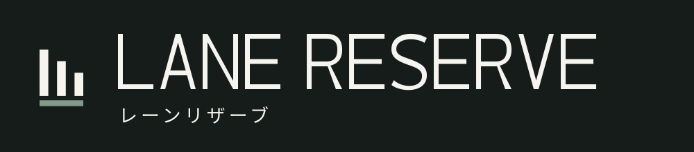
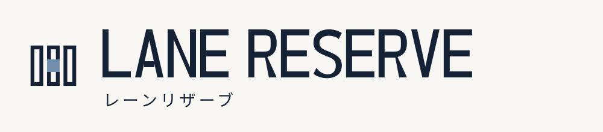
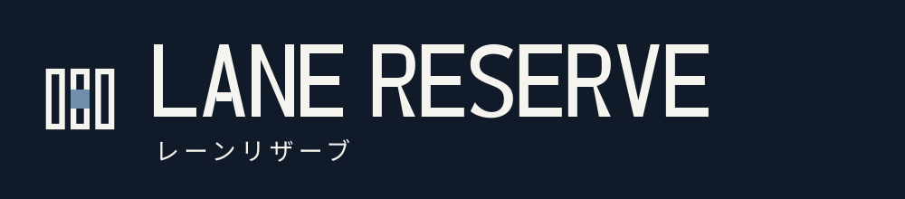
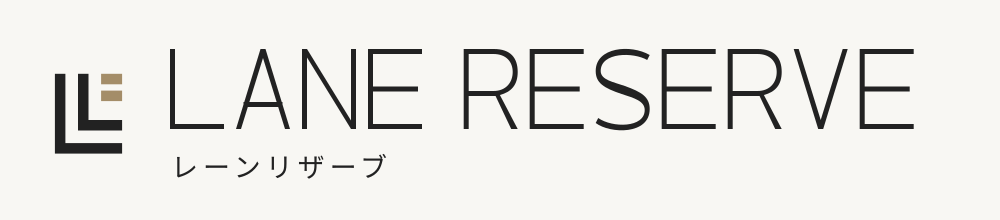
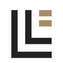
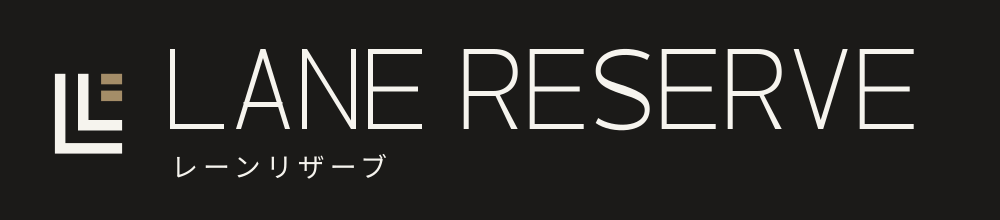

Brand studies / 03 directions / October 2026
An open, balanced wordmark with ascending lanes and a muted sage baseline.


A compact, confident wordmark with a reserved slot in a three-lane grid.


Fine, spacious capitals paired with nested lane corners and a warm mineral accent.



Original vector path capitals · Japanese subtitle · Flat two-color symbols